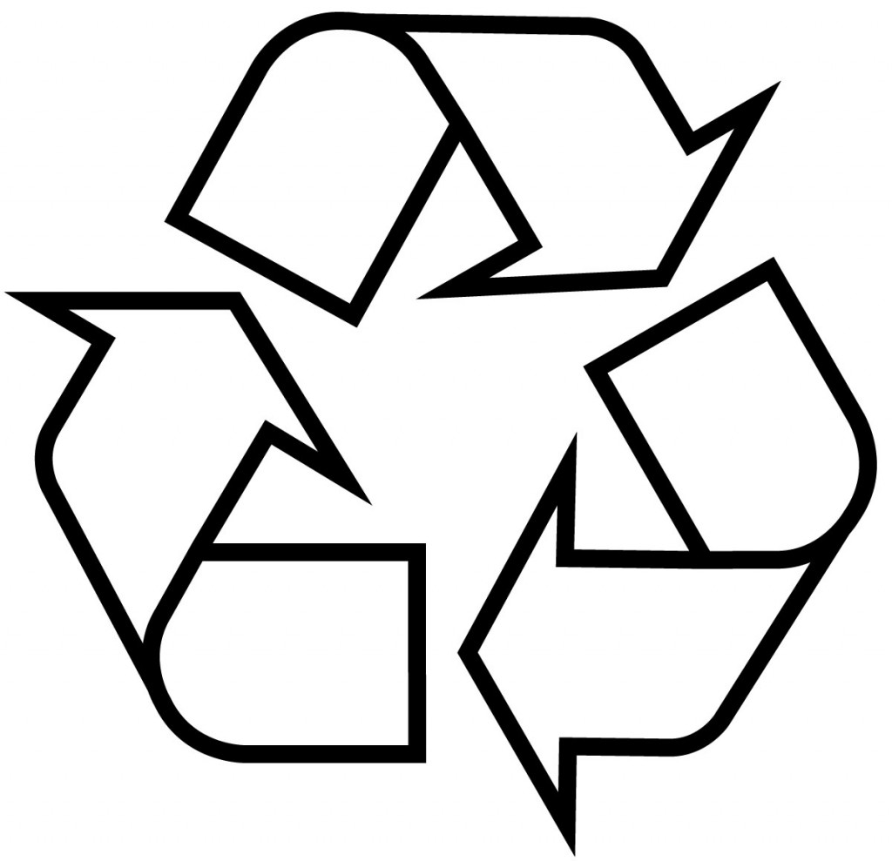

Recycling is a problem that plagues our society. Why is it that after all these year we haven't learned our lesson? Do we just not care for the future that we could be ruining? Pardon I don't mean just the future. I mean the present as well. Animals die from pollution that could be prevented by recycling. Those deaths cause a chain reaction and will reach us sooner than we think unless we act immediately.